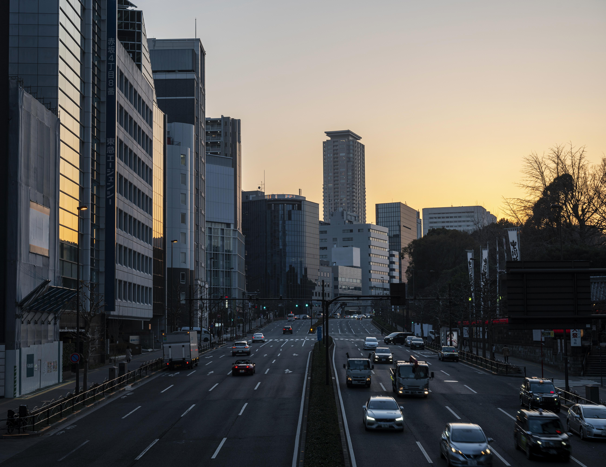

A Serenidade Do Campo
Descubra a tranquilidade e a beleza natural do campo. Aqui, o tempo parece desacelerar, permitindo uma conexão
profunda com a natureza. Respire o ar puro, ouça o canto dos pássaros e desfrute da simplicidade e da abundância
que a terra oferece. Um refúgio de paz, onde a vida floresce em seu próprio ritmo.
Saiba Mais
O Pulso Vibrante Da Cidade
Sinta a energia contagiante da vida urbana. A cidade é um caldeirão de inovação, cultura e oportunidades, onde
o dinamismo nunca para. Com suas luzes, sons e a diversidade de pessoas, cada esquina revela uma nova descoberta.
Explore a efervescência e a constante reinvenção que só a vida na metrópole pode oferecer.
Saiba Mais

A Conexão Que Transforma
A união do campo e da cidade revela um novo cenário de possibilidades e inovações. Essa fusão traz o frescor
da natureza para o ambiente urbano e impulsiona o desenvolvimento rural com novas tecnologias e ideias.
É a ponte entre a tradição e o futuro, onde a qualidade de vida é elevada pela integração desses dois mundos tão ricos e distintos.
Saiba Mais